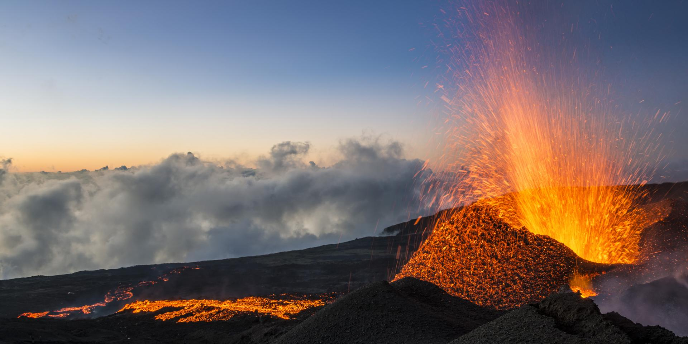

<!DOCTYPE HTML>
<HTML>
	<head>
		<meta charset="utf-8">
		<style>
		<h1>
		À la découverte de l’Ile de la Réunion 
		</h1>
		<p1> "Que vous soyez un amateur de randonnées ou un adepte de farniente, la Réunion saura vous satisfaire sur tous les points grâce à sa nature généreuse. Voici les lieux incontournables à mettre sur votre programme."
		</p>

		<h2> Takamaka</h2>
		</p>
		

		<h2>Le volcan</h2>
		<p2>Le piton de la Fournaise, culminant à 2 632 mètres d'altitude, est le volcan actif de l'île de La Réunion
		</p2>
		</p1>
		
	</body>
	<body style="background-color:##008080;">
</body>

<html>